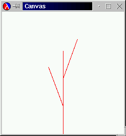
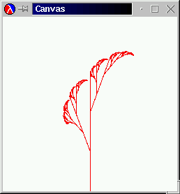
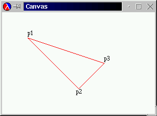
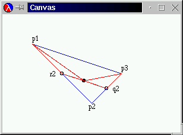
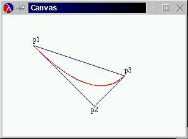

(start 400 400). Experiment with other end
points and canvas dimensions. As we have seen in the previous two sections, the design of an algorithm usually starts with an informal description of a mechanism. The kernel of this description is about how to create a problem that is more easily solvable than the given one and whose solution contributes to the solution of the given problem. Coming up with such ideas requires studying many different examples. This section presents several illustrative examples of the design recipe for generative recursion. Some are directly drawn from mathematics, which is the source of many ideas for general problem-solving processes; others come from computational contexts. The important point is to understand the generative ideas behind the algorithms so that they can be applied in other contexts.
The first example is a graphical illustration of our principle: the Sierpinski triangle. The second one concerns ``parsing,'' that is, the process of dissecting sequences of symbols. The third one explains the divide-and-conquer principle with a simple mathematical example: finding the root of a function. Many mathematical processes exploit this idea, and it is important to understand the idea for applied mathematics. In the fourth section, we discuss yet another way of finding a root, this time based on Newton's method. The last section is an extended exercise; it introduces Gaussian elimination, the first step in solving a system of equations.
Fractals play an important role in computational geometry. Flake (The Computational Beauty of Nature, The MIT Press, 1998) says that ``geometry can be extended to account for objects with a fractional dimension. Such objects, known as fractals, come very close to capturing the richness and variety of forms found in nature. Fractals possess structural self-similarity on multiple ... scales, meaning that a piece of a fractal will often look like the whole.''
|
Figure 71 displays an example of a fractal, widely known as the Sierpinski triangle. The basic shape is an (equilateral) triangle, as shown in the left-most picture. In the right-most example we see that the triangle is repated many times and in many sizes inside of the outermost triangle. The picture in the middle is a snapshot from the middle of the drawing process.
The middle picture also suggests what the generative step might look like. Given the three endpoints of a triangle, we draw the triangle and then compute the midpoint of each side. If we were to connect these midpoints to each other, we would divide the given triangle into four triangles. The middle picture illustrates this idea. The Sierpinski triangle is the result of repeating the process for the three outer triangles and leaving the inner one alone.
A function that draws this nest of triangles must mirror this process. Its
input data must represent the triangle that we start with. The process
stops when the input data specifies a triangle that is too small to be
drawn. Since all of our drawing functions produce true when they are
done, we agree that our Sierpinski function should also produce
true.
If the given triangle is still large enough, the function must draw the triangle and possibly some nested ones. The trick is to translate the partitioning of the triangle into Scheme. Let us summarize our discussion with a skeletal Scheme definition:
;;sierpinski : posn posn posn -> true;; to draw a Sierpinski triangle down ata,b, andc, ;; assuming it is large enough (define (sierpinski a b c) (cond [(too-small? a b c) true] [else ... (draw-triangle a b c) ... ]))
The function consumes three posn structures and returns true
when it is done. The cond-expression reflects the general outline
of an algorithm. It is our task to define too-small?, the function
that determines whether the problem is trivially solvable, and
draw-triangle. In addition, we must still add a Scheme expression
that formulates the partitioning of the triangle.
The partitioning step requires the function to determine the three mid-points
between the three end-points. Let us call these new mid-points
a-b, b-c, and c-a. Together with the given
endpoints, a, b, and c, they determine four
triangles:
a, a-b, c-a;
b, a-b, b-c;
c, c-a, b-c;
a-b, b-c, c-a.
Thus, if we wanted to create the Sierpinski triangle for, say, the first
listed triangle, we would use (sierpinski a a-b c-a).
Since each midpoint is used twice, we use a local-expression to
translate the generative step into Scheme. The local-expression
introduces the three new midpoints. Its body contains three recursive
applications of sierpinski and the draw-triangle
application mentioned earlier. To combine the solutions of the three
problems, we use an and-expression, which ensures that all three
recursions must succeed. Figure 72 collects all the
relevant definitions, including two small functions based on domain
knowledge from geometry.
Since sierpinski is based on generative recursion, collecting the
code and testing it is not the last step. We must also consider why the
algorithm terminates for any given legal input. The inputs of
sierpinski are three positions. The algorithm terminates if the
corresponding triangle is too small. But, each recursive step subdivides
the triangle so that the sum of its sides is only half of the given
triangle. Hence the size of the triangles indeed decreases and
sierpinski is bound to produce true.
Exercise 27.1.1. Develop the functions
;; draw-triangle : posn posn posn -> true
;; too-small? : posn posn posn -> bool
to complete the definitions in figure 72.
Use the teachpack draw.ss to test the code. For a first test of the complete function, use the following definitions:
(define A (make-posn 200 0)) (define B (make-posn 27 300)) (define C (make-posn 373 300)
Create a canvas with (start 400 400). Experiment with other end
points and canvas dimensions.  Solution
Solution
Exercise 27.1.2. The process of drawing a Sierpinski triangle usually starts from an equilateral shape. To compute the endpoints of an equilateral Sierpinski triangle, we can pick a large circle and three points on the circle that are 120 degrees apart. For example, they could be at 0, 120, 240:
(define CENTER (make-posn 200 200)) (define RADIUS 200) ;;cicrcl-pt : number -> posn;; to compute a position on the circle withCENTER;; andRADIUSas defined above (define (circle-pt factor) ...) (define A (circle-pt 120/360)) (define B (circle-pt 240/360)) (define C (circle-pt 360/360))
Develop the function circle-pt.
Hints: Recall that DrScheme's sin and cos compute the
sine and cosine in terms of radians, not degrees. Also keep in mind that
on-screen positions grow downwards not upwards.  Solution
Solution
Exercise 27.1.3.
Rewrite the function in figure 72 to use structures
for the representation of triangles. Then apply the new function to a list
of triangles and observe the effect.  Solution
Solution
Exercise 27.1.4. Take a look at the following two pictures:
|  |  |
The left one is the basic step for the generation of the ``Savannah'' tree on the right. It is analogous to the middle picture on page 34. Develop a function that draws trees like the one in the right picture.
Hint: Think of the problem as drawing a straight line, given its starting
point and an angle in, say, radians. Then, the generative step divides a
single straight line into three pieces and uses the two intermediate points
as new starting points for straight lines. The angle changes at each
step in a regular manner.  Solution
Solution
Exercise 27.1.5. In mathematics and computer graphics, people must often connect some given points with a smooth curve. One popular method for this purpose is due to Bezier.58 Here is a sequence of pictures that illustrate the idea:
|  |  |  |
For simplicity, we start with three points: p1,
p2, and p3. The goal is to draw a smooth curve from
p1 to p3, viewed from p2. The original
triangle is shown on the left; the desired curve appears on the right.
To draw the curve from a given triangle, we proceed as follows. If the
triangle is small enough, draw it. It appears as a large point. If
not, generate two smaller triangles as illustrated in the center
picture. The outermost points, p1 and p3, remain the
respective outermost points. The replacements for the point in the
middle are r2 and q2, which are the midpoints
between p1 and p2 and between p2 and
p3, respectively. The midpoint between r2 and
q2 (marked with ![[curriculum-Z-G-D-4.gif]](curriculum-Z-G-D-4.gif) ) is the new left-most and
right-most endpoint, respectively, for the two new triangles.
) is the new left-most and
right-most endpoint, respectively, for the two new triangles.
To test the function, use the teachpack draw.ss. Here is some good test data:
(define p1 (make-posn 50 50)) (define p2 (make-posn 150 150)) (define p3 (make-posn 250 100))
Use (start 300 200) to create the canvas. Experiment with other
positions.  Solution
Solution
In section 16, we discussed the organization of computer files, which is one way to equip a computer with permanent memory. We did not discuss the nature of files per se. Roughly put, we can think of a file as a list of symbols:
A file is either
empty, or
(cons s f)
where s is a symbol and f is a file.
A fully faithful representation of files should include only symbols that correspond to characters, but for our purposes we may ignore this distinction.
Following a tradition that predates computers,59 one symbol is almost always treated differently:
'NL. The symbol stands for newline
and separates two lines
from each other. That is, 'NL indicates the end of one line and
the beginning of another. In most cases, it is therefore better to think of
files as data with more structure. In particular, a file could be
represented as a list of lines, where each line is a list of symbols.
For example, the file
(list 'how 'are 'you 'NL 'doing '? 'NL 'any 'progress '?)
should be processed as a list of three lines:
(list (list 'how 'are 'you) (list 'doing '?) (list 'any 'progress '?))
Similarly, the file
(list 'a 'b 'c 'NL 'd 'e 'NL 'f 'g 'h 'NL)
is also represented as a list of three lines, because, by convention, an empty line at the end is ignored:
(list (list 'a 'b 'c) (list 'd 'e) (list 'f 'g 'h))
Exercise 27.2.1.
Determine what the list-of-lines representation for empty,
(list 'NL), and (list 'NL 'NL) should be. Why are these
examples important test cases?
Hint: Keep in mind that an empty line at the end is
ignored.  Solution
Solution
Here are the contract, purpose statement, and header:
;; file->list-of-lines : file -> (listof (listof symbols))
;; to convert a file into a list of lines
(define (file->list-of-lines afile) ...)
Describing the process of separating a file into a list of lines is
easy. The problem is trivially solvable if the file is empty; in
that case, the file doesn't contain a line. Otherwise, the file contains at
least one symbol and thus at least one line. This line must be separated
from the rest of the file, and then the rest of the file must be translated
into a list of lines.
Let us sketch this process description in Scheme:
(define (file->list-of-lines afile) (cond [(empty? afile) ...] [else ... (first-line afile) ... ... (file->list-of-lines (remove-first-line afile)) ...]))
Because the separation of the first line from the rest of the file requires
a scan of an arbitrarily long list of symbols, we add two auxiliary
functions to our wish list: first-line, which collects all symbols
up to, but excluding, the first occurrence of 'NL or the end of
the list; and remove-first-line, which removes all those symbols
and produces the remainder of afile.
|
From here, we can fill the gaps easily. In file->list-of-lines,
the answer in the first clause must be empty because an empty file
does not contain any lines. The answer in the second clause must
cons the value of (first-line afile) onto the value
(file->list-of-lines (remove-first-line afile)), because the first
expression computes the first line and the second one computes the rest of
the lines. Finally, the auxiliary functions process their inputs in a
structurally recursive manner; their development is a straightforward
exercise. Figure 73 collects the three function
definitions and a variable definition for NEWLINE.
Let us take a look at the process of turning the first file from above into a list of lines:
(file->list-of-lines (list 'a 'b 'c 'NL 'd 'e 'NL 'f 'g 'h 'NL)) = (cons (list 'a 'b 'c) (file->list-of-lines (list 'd 'e 'NL 'f 'g 'h 'NL))) = (cons (list 'a 'b 'c) (cons (list 'd 'e) (file->list-of-lines (list 'f 'g 'h 'NL)))) = (cons (list 'a 'b 'c) (cons (list 'd 'e) (cons (list 'f 'g 'h) (file->list-of-lines empty)))) = (cons (list 'a 'b 'c) (cons (list 'd 'e) (cons (list 'f 'g 'h) empty))) = (list (list 'a 'b 'c) (list 'd 'e) (list 'f 'g 'h))
From this evaluation we can easily tell that the argument of the recursive
application of file->list-of-lines is almost never the rest of the
given file. That is, it is basically never an immediate component of the
given file but always a proper suffix. The only exception occurs when
'NL occurs twice in a row.
Finally, the evaluation and the definition of file->list-of-lines
show that its generative recursion is simple. Every recursive application
consumes a list that is shorter than the given one. Hence the recursive
process eventually stops because the function consumes empty.
Exercise 27.2.2.
Organize the program in figure 73 using local.
Abstract the functions first-line and remove-first-line.
Then organize the resulting program using a local
again.  Solution
Solution
Exercise 27.2.3.
Design file->list-of-checks. The function consumes a file of
numbers and outputs a list of restaurant
records.
empty, or
(cons N F)
where N is a number and F is a
file, or
(cons 'NL F), where F is a file.
The output of file->list-of-checks is a list of restaurant
structures with two fields:
(define-struct rr (table costs))
They are: a table number and a list of amounts charged to that table.
Example:
(equal? (file->list-of-checks (list 1 2.30 4.00 12.50 13.50 'NL 2 4.00 18.00 'NL 4 2.30 12.50)) (list (make-rr 1 (list 2.30 4.00 12.50 13.50)) (make-rr 2 (list 4.00 18.00)) (make-rr 4 (list 2.30 12.50))))
Exercise 27.2.4.
Develop the function create-matrix. It consumes a number
n and a list of n2 numbers. It produces a list of n
lists of n numbers.
Example:
(equal? (create-matrix 2 (list 1 2 3 4)) (list (list 1 2) (list 3 4)))
Applied mathematicians model the real-world with non-linear equations and then try to solve them. Here is a simplistic example:
Given a perfect cube that encloses 27m3. What area do its six walls cover?We know from geometry that if the length of a cube's side is x, the enclosed space is x3. Hence we need to know the possible values of x such that
Once we have solved the equation, the covered area is 6 · x2.
In general, we are given a function f from numbers to numbers, and want to know some number r such that
The value r is called the root
of f. In our above
example, f(x) = x3 - 27, and the value r is the length of the
side of the cube.60
For the past few centuries, mathematicians have developed many methods for finding the root of different types of functions. In this section, we study a solution that is based on the Intermediate Value Theorem, an early result of mathematical analysis. The resulting algorithm is a primary example of generative recursion based on a deep mathematical theorem. It has been adapted to other uses and has become known as the binary search algorithm in computer science.
|
The Intermediate Value Theorem says that a continuous function f has a root in an interval [a,b] if the signs of f(a) and f(b) differ. By continuous we mean a function that doesn't ``jump,'' that doesn't have gaps, and that always continues in a ``smooth'' fashion. The theorem is best illustrated with the graph of a function. The function f in figure 74 is below the x axis at a and above the x-axis at b. It is a continuous function, which we can tell from the uninterrupted, smooth line. And indeed, the function intersects the x axis somewhere between a and b.
Now take a look at the midpoint between a and b:
![[curriculum4a-Z-G-4.gif]](curriculum4a-Z-G-4.gif)
It partitions the interval [a,b] into two smaller, equally large intervals. We can now compute the value of f at m and see whether it is below or above 0. Here f(m) < 0, so according to the Intermediate Value Theorem, the root is in the right interval: [m,b]. Our picture confirms this because the root is in the right half of the interval, labeled ``range 2'' in figure 74.
The abstract description of the Intermediate Value Theorem and the illustrative
example describe a process for finding a root. Specifically, we use the
halving step as many times as necessary to determine a tolerably small
range in which f must have a root. Let us now translate this description
into a Scheme algorithm, which we call find-root.
To begin with, we must agree on the exact task of find-root. It
consumes a function, let's call it f, for which we need to find a
root. In addition, it must consume the boundaries of the interval in which we
expect to find a root. For simplicity, let's say that find-root
consumes two numbers: left and right. But these parameters
can't be just any two numbers. For our algorithm to work we must assume that
(or (<= (f left) 0 (f right)) (<= (f right) 0 (f left)))
holds. This assumption expresses the condition of the Intermediate Value
Theorem that the function must have different signs for left and
right.
According to the informal process description, the task of
find-root is to find an interval that contains a root and that is
tolerably small. The size of the given interval is (- right
left). For the moment, we assume that the tolerance is defined as a top-level
variable TOLERANCE. Given that, find-root can produce one
of the two boundaries of the interval because we know what its size is;
let's pick the left one.
Here is a translation of our discussion into a contract, a purpose statement, and a header, including the assumption on the parameters:
;;find-root : (number -> number) number number -> number;; to determineRsuch thatfhas a root in [R,(+ R TOLERANCE)] ;; ;; ASSUMPTION:(or (<= (f left) 0 (f right)) (<= (f right) 0 (f left)))(define (find-root f left right) ...)
At this stage, we should develop an example of how the function works. We have already seen one; the following exercise develops a second one.
Exercise 27.3.1. Consider the following function definition:
;; poly : number -> number
(define (poly x)
(* (- x 2) (- x 4)))
It defines a binomial for which we can determine its roots by hand -- they
are 2 and 4. But it is also a non-trivial input for
find-root, so that it makes sense to use it as an example.
Mimic the root-finding process based on the Intermediate Value Theorem for
poly, starting with the interval 3 and
6. Tabulate the information as follows:
|
poly contains a
root.
Next we turn our attention to the definition of find-root. We start
from generative-recursive-fun and ask the four relevant questions:
We need a condition that describes when the problem is solved and a
matching answer. This is straightforward. The problem is solved if the
distance from left to right is smaller than or equal to
TOLERANCE:
(<= (- right left) TOLERANCE)
The matching result is left.
We must formulate an expression that generates new problems for
find-root. According to our informal process description, this step
requires determining the midpoint and choosing the next interval. The
midpoint is used several times, so we use a local-expression to
introduce it:
(local ((define mid (/ (+ left right) 2))) ...)
Choosing an interval is more complicated than that.
Consider the Intermediate Value Theorem again. It says that a given interval is an interesting candidate if the function values at the boundaries have different signs. For the function's purpose statement, we expressed this constraint using
(or (<= (f left) 0 (f right)) (<= (f right) 0 (f left)))
Accordingly, the interval between left and mid is the next
candidate if
(or (<= (f left) 0 (f mid)) (<= (f mid) 0 (f left)))
And, the interval between mid and right is it, if
(or (<= (f mid) 0 (f right)) (<= (f right) 0 (f mid)))
In short, the body of the local-expression must be a conditional:
(local ((define mid (/ (+ left right) 2))) (cond [(or (<= (f left) 0 (f mid)) (<= (f mid) 0 (f left))) (find-root left mid)] [(or (<= (f mid) 0 (f right)) (<= (f right) 0 (f mid))) (find-root mid right)]))
In both clauses, we use find-root to continue the search.
The completed function is displayed in figure 75. The following exercises suggest some tests and a termination argument.
|
Exercise 27.3.2.
Use poly from 27.3.1 to test
find-root. Experiment with different values for
TOLERANCE. Use the strategy of section 17.8 to
formulate the tests as boolean-valued
expressions.  Solution
Solution
Exercise 27.3.3.
Suppose the original arguments of find-root describe an interval
of size S1. How large is the distance between left and
right for the first recursive call to find-root? The
second one? And the third? After how many evaluation steps is the distance
between left and right smaller than or equal to
TOLERANCE? How does the answer to this question show that
find-root produces an answer for all inputs that satisfy the
assumption?  Solution
Solution
Exercise 27.3.4.
For every midpoint m, except for the last one, the
function find-root needs to determine the value of
(f m) twice. Validate this claim for one example with a
hand-evaluation.
Since the evaluation of (f m) may be time-consuming, programmers
often implement a variant of find-root that avoids this
recomputation. Modify find-root in figure 75 so
that it does not need to recompute the value of (f mid).
Hint: Define a help function find-root-aux that takes two extra
arguments: the values (f left) and (f
right).  Solution
Solution
Exercise 27.3.5.
A table
is a function that consumes natural numbers between
0 and VL (exclusive) and produces numbers:
;;g : N -> num;; ASSUMPTION:iis between 0 andVL(define (g i) (cond [(= i 0) -10] [(= i 1) ...] ... [(= i (- VL 1)) ...] [else (error 'g "is defined only between 0 and VL (exclusive)")]))
The number VL is called the table's length. The root
of a table is the number in the table that is closest to 0. Even
if we can't read the definition of a table, we can find its root with a
search function.
Develop the function find-root-linear, which consumes a table, the
table's length, and finds the root of the table. Use structural induction
on natural numbers. This kind of root-finding process is often called a
LINEAR SEARCH.
A table t is sorted in ascending order if (t 0) is less
then (t 1), (t 1) is less than (t 2), and so
on. If a table is monotonic, we can determine the root using binary
search. Specifically, we can use binary search to find an interval of size
1 such that either the left or the right boundary is the root's
index. Develop find-root-discrete, which consumes a table and its
length, and finds the table's root.
Hints: (1) The interval boundary arguments for find-root-discrete
must always be natural numbers. Consider how this affects the midpoint
computation. (2) Also contemplate how the first hint affects the discovery
of trivially solvable problem instances. (3) Does the termination argument
from exercise 27.3.3 apply?
If the tabulating function is defined on all natural numbers between
0 and 1024, and if its root is at 0, how many
recursive applications are needed with find-root-discrete and
find-root-lin to determine a root
interval?  Solution
Solution
Exercise 27.3.6. We mentioned in section 23.4 that mathematicians are interested not only about the roots of functions, but also in the area that a function encloses between two points. Mathematically put, we are interested in integrating functions over some interval. Take another look at the graph in figure 64 on page 29. Recall that the area of interest is that enclosed by the bold vertical lines at a and b, the x axis, and the graph of the function.
In section 23.4, we learned to approximate the area by computing and adding up the area of rectangles like the two above. Using the divide-and-conquer strategy, we can also design a function that computes the area based on generative recursion. Roughly speaking, we split the interval into two pieces, compute the area of each piece, and add the two areas together.
Step 1: Develop the algorithm integrate-dc, which
integrates a function f between the boundaries left and
right via the divide-and-conquer strategy employed in
find-root. Use rectangle approximations when an interval has
become small enough.
Although the area of a rectangle is easy to compute, a rectangle is often
a bad approximation of the area under a function graph. A better geometric
shape is the trapezoid limited by a, (f a), b, and
(f b). Its area is:
Step 2: Modify integrate-dc so that it uses
trapezoids instead of rectangles.
The plain divide-and-conquer approach is wasteful. Consider that a function graph is level in one part and rapidly changes in another. For the level part it is pointless to keep splitting the interval. We could just compute the trapezoid over a and b instead of the two halves.
To discover when f is level, we can change the algorithm as follows. Instead of just testing how large the interval is, the new algorithm computes the area of three trapezoids: the given one, and the two halves. Suppose the difference between the two is less than
This area represents a small rectangle, of height TOLERANCE, and
represents the error margin of our computation. In other words, the
algorithm determines whether f changes enough to affect the error
margin, and if not, it stops. Otherwise, it continues with the
divide-and-conquer approach.
Step 3: Develop integrate-adaptive, which
integrates a function f between left and right
according to the suggested method. Do not discuss the termination
of integrate-adaptive.
Adaptive Integration: The algorithm is called ``adaptive
integration'' because it automatically adapts its strategy. For those parts
of f that are level, it performs just a few calculations; for the other
parts, it inspects very small intervals so that the error margin is also
decreased accordingly.  Solution
Solution
Newton invented another method for finding the root of a function.
Newton's method exploits the idea of an approximation. To search a root of
some function f, we start with a guess, say, r1. Then we
study the tangent of f at r1, that is, the line that
goes through the Cartesian point (r1, f(r1)) and has the
same slope as f. This tangent is a linear approximation of
f and it has a root that is in many cases closer to the root of
f than our original guess. Hence, by repeating this process
sufficiently often, we can find an r for which (f r) is
close to 0.
To translate this process description into Scheme, we follow the familiar
process. The function -- let's call it newton in honor of its
inventor -- consumes a function f and a number r0, the
current guess. If (f r0) is close to 0, the problem is
solved. Of course, close to 0 could be mean (f r0) is a
small positive number or a small negative number. Hence we translate this
idea into
(<= (abs (f r0)) TOLERANCE)
That is, we determine whether the absolute value is small. The answer in
this case is r0.
The generative step of the algorithm consists of finding the root of the
tangent of f at r0. It generates a new guess. By applying
newton to this new guess, we resume the process with what we
hope is a better guess:
;;newton : (number -> number) number -> number;; to find a numberrsuch that(< (abs (f r)) TOLERANCE)(define (newton f r0) (cond [(<= (abs (f r0)) TOLERANCE) r0] [else (newton f (find-root-tangent f r0))]))
Since finding the root of a tangent is domain knowledge, we define a separate function for this purpose:
;;find-root-tangent : (number -> number) number -> number;; to find the root of the tagent offatr0(define (find-root-tangent f r0) (local ((define fprime (d/dx f))) (- r0 (/ (f r0) (fprime r0)))))
The function first computes (d/dx f), that is, the derivative of
f at r0 (see section 23.5) at r0. The
body of the local-expression computes the root from the current
guess, (f r0), and the slope of f at
r0.61
The most interesting aspect of newton is that, unlike all other
functions we have discussed, it does not always terminate. Consider
the following function:
;; f : number -> number
(define (f x)
(- (* x x) x 1.8))
A simple hand-calculation shows that its derivative is
;; fprime : number -> number
(define (fprime x)
(- (* 2 x) 1))
If we were to use 1/2 as the initial guess, we would have to find
the root of a tangent with slope 0, that is, a tangent that is
parallel to the x axis. Of course, such a tangent doesn't have a
root. As a result, find-root-of-tangent cannot find a tangent
and newton won't find a root.
Exercise 27.4.1.
Test newton with f. Use the initial guesses 1,
2, and 3. Also use find-root from the preceding
section to find a root.
Use a hand-evaluation to determine how quickly newton finds a
value close to the root (if it finds one). Compare newton's
behavior with find-root's behavior.
Employ the strategy of section 17.8 to formulate the tests
as boolean-valued expressions.  Solution
Solution
Mathematicians not only search for solutions of equations in one variable; they also study whole systems of linear equations. Here is a sample system of equations in three variables, x, y, and z:
A solution to a system of equations is a series of numbers, one per variable, such that if we replace the variable with its corresponding number, the two sides of each equation evaluate to the same number. In our running example, the solution is x = 1, y = 1, and z = 2, as we can easily check:
![[curriculum4a-Z-G-11.gif]](curriculum4a-Z-G-11.gif)
The first equation now reads as 10 = 10, the second one as 31 = 31, and the last one as 1 = 1.
One of the most famous methods for finding a solution is called Gaussian elimination. It consists of two steps. The first step is to transform the system of equations into a system of different shape but with the same solution. The second step is to find solutions to one equation at a time. Here we focus on the first step because it is another interesting instance of generative recursion.
The first step of the Gaussian elimination algorithm is called ``triangulation'' because the result is a system of equations in the shape of a triangle. In contrast, the original system is typically a rectangle. To understand this terminology, take a look at this representation of the original system:
![[curriculum4a-Z-G-12.gif]](curriculum4a-Z-G-12.gif)
This representation captures the essence of the system, namely, the numeric coefficients of the variables and the right-hand sides. The names of the variables don't play any role.
The generative step in the triangulation phase is to subtract the first row (list) of numbers from all the other rows. Subtracting one row from another means subtracting the corresponding items in the two rows. With our running example, this step would yield
![[curriculum4a-Z-G-13.gif]](curriculum4a-Z-G-13.gif)
when we subtract the first row from the second.
The goal of these subtractions is to put a 0 into the first column of all but the first row. To achieve this for the last row, we subtract the first row twice from the second one:
Put differently, we first multiply each item in the first row with 2 and
then subtract the result from the last row. It is easy to check that the solutions
for the original system of equations and for this new one are identical.
Exercise 27.5.1. Check that the following system of equations
has the same solution as the one labeled with (±).
 Solution
Solution
Exercise 27.5.2. Develop subtract. The
function consumes two lists of numbers of equal length. It subtracts the
first from the second, item by item, as many times as necessary to
obtain 0 in the first position. The result is the rest of
this list.  Solution
Solution
Following convention, we drop the leading 0's from the
last two equations:
If, in addition, we use the same process for the remainder of the system to generate shorter rows, the final representation has a triangular shape.
Let us study this idea with our running example. For the moment we ignore the first row and focus on the rest of the equations:
By subtracting the first row now -1 times from the second one, we get
after dropping the leading 0. The remainder of this system is a single
equation, which cannot be simplified any further.
Here is the result of adding this last system to the first equation:
As promised, the shape of this system of equations is (roughly) a triangle, and as we can easily check, it has the same solution as the original system.
Exercise 27.5.3. Check that the following system of equations
![[curriculum4a-Z-G-20.gif]](curriculum4a-Z-G-20.gif)
has the same solution as the one labeled with (±).
 Solution
Solution
Exercise 27.5.4.
Develop the algorithm triangulate, which consumes a rectangular
representation of a system of equations and produces a triangular version
according the Gaussian algorithm.  Solution
Solution
Unfortunately, the current version of the triangulation algorithm occasionally fails to produce the solution. Consider the following (representation of a) system of equations:
Its solution is x = 1, y = 1, and z = 1.
The first step is to subtract the first row from the second and to subtract it twice from the last one, which yields the following matrix:
Next our algorithm would focus on the rest of the matrix:
![[curriculum4a-Z-G-23.gif]](curriculum4a-Z-G-23.gif)
but the first item of this matrix is 0. Since we cannot divide by
0, we are stuck.
To overcome this problem, we need to use another piece of knowledge from
our problem domain, namely, that we can switch equations around without
changing the solution. Of course, as we switch rows, we must make sure that
the first item of the row to be moved is not 0. Here we can simply
swap the two rows:
From here we may continue as before, subtracting the first equation from the remaining ones a sufficient number of times. The final triangular matrix is:
It is easy to check that this system of equations still has the solution x = 1, y = 1, and z = 1.
Exercise 27.5.5.
Revise the algorithm triangulate from exercise 27.5.4 so
that it switches rows when the first item of the matrix is 0.
Hint: DrScheme provides the function remove. It
consumes an item I and a list L and produces a list like
L but with the first occurrence of I removed. For
example,
(equal? (remove (list 0 1) (list (list 2 1) (list 0 1))) (list (list 2 1)))
Exercise 27.5.6. Some systems of equations don't have a solution. Consider the following system as an example:
Try to produce a triangular system by hand and with
triangulate. What happens? Modify the function so that it signals
an error if it encounters this situation.  Solution
Solution
Exercise 27.5.7. After we obtain a triangular system of equations such as (*) on page 34 (or exercise 27.5.3), we can solve the equations. In our specific example, the last equation says that z is 2. Equipped with this knowledge, we can eliminate z from the second equation through a substitution:
Determine the value for y. Then repeat the substitution step for y and z in the first equation and find the value for x.
Develop the function solve, which consumes triangular systems of
equations and produces a solution. A triangular system of equations has
the shape
where aij and bi are numbers. That is, it is a list of lists and each of the lists is one item shorter than the preceding one. A solution is a list of numbers. The last number on the list is
![[curriculum4a-Z-G-29.gif]](curriculum4a-Z-G-29.gif)
Hint: Developing solve requires a solution for the following
problem. Suppose we are given a row:
(list 3 9 21)
and a list of numbers that solve the remainder of the system:
(list 2).
In the world of equations, these two pieces of data represent the following knowledge:
![[curriculum4a-Z-G-30.gif]](curriculum4a-Z-G-30.gif)
and
which in turn means we must solve the following equation:
![[curriculum4a-Z-G-32.gif]](curriculum4a-Z-G-32.gif)
Develop the function evaluate, which evaluates the rest of the
left-hand side of an equation and subtracts the right-hand side from this
sum. Equivalently, evaluate consumes (list 9 21) and
(list 2) and produces -3, that is, 9 · 2 - 21. Now
use evaluate for the intermediate step in
solve.  Solution
Solution
58 Ms. Geraldine Morin suggested this exercise.
59 The tradition of breaking a file into lines is due to the use of punch cards with early mechanical computers, dating back to the 1890 census. It is meaningless for file storage in modern computing. Unfortunately, this historical accident continues to affect the development of computing and software technology in a negative manner.
60 If the equation is originally presented as g(x) = h(x), we set f(x) = g(x) - h(x) to transform the equation into the standard form.
61 The tangent of a function f at ri is the linear function
![[curriculum4a-Z-G-7.gif]](curriculum4a-Z-G-7.gif)
The function f' is the derivative of f, and f'(r0) is the slope of f at r0. Furthermore, the root of a linear function is the intersection of a straight line with the x axis. In general, if the line's equation is
then its root is - b/a. In our case, the root of f's tangent is
![[curriculum4a-Z-G-9.gif]](curriculum4a-Z-G-9.gif)